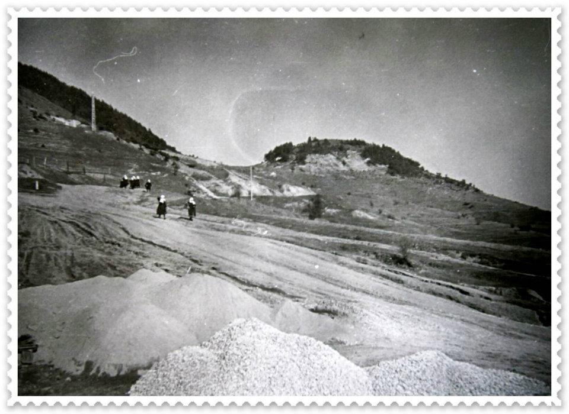

Предполага се, че селището е възникнало по време на османското владичество на мястото на юрушка стоянка - периода 1750г.-1800г. Първите писменни данни за селото са от 1842г. В землището му са открити:палеолитно находище, следи от първобитния човек от мустерската епоха и тракийски некропол от 10-11 век, съответно в местностите Чакмаклъ,Чакмаклъдере и в сегашната местност "Валтата". Една от люлките на европейската цивилизация е планината Родопи. Първобитните хора са живели тук 65 000- 60 000 пр. Хр. Първите следи от човешко присъствие в нея /Родопи/ са открити в селото, близо до хижа “Орфей”- кремъчни оръдия на труда. От преди ІІ хилядолетие в околностите на с. Борино живее тракийското племе беси. От тях са открити тракийски могили на вр. Турлата и много светилища. Светилището на Дионис в Родопите и музикалната култура на траките са свързани с името на митичния родопски певец Орфей, покорил със звуците на лирата си ветровете и дивите зверове. Съществува хипотеза, че на връх Виденица се е намирало прочутото в древността светилище на бог Дионис - посещавано от Гай Октавий и Александър Македонски. През 1396г. Родопите попадат изцяло под владението на Османската империя. За това време свидетелствува Средновековния некропол в местността “Джумая дюзю” от Х-ХІV в., в който първите погребения са християнски, а по-късните мюсюлмански. Според Българо-турската спогодба от 1886 г. Борино остава в турска територия. Върнато е на България по Букурещкия мирен договор през 1913 година. До 1934 г. Борино е носило името Карабулак. Сред населението на селото е наложена легендата за Кара була – в превод от турски език означава черна була /жената в черно или черната вдовица/. Тя дошла в землището на Борино заедно с четиримата си синове от близкото с. Гьоврен. Тук братята създали свои семейства и се разселили, създавайки четири махали в селото. За съжаление за времето преди 1934 година няма запазени сигурни писмени извори за наименованието и развитието на селото. Голяма част от информацията е устна и запазена предимно във фолклора и етнографията. В с. Борино е живяло само турско население до 1930 г. когато се заселват българи християни от смолянските села Соколовци, Гела, Солища и Стойките. Тук намират по-благоприятни условия за живот и за развитие на овцевъдство. Те купуват имотите на местните турски семейства, които емигрират в Турция. Също така са по-близо до имотите си по Беломорието. След 1945 г. селото продължава да се развива като особен приоритет се дава на инфраструктурата и социално-здравните обекти - училище, читалище. Прокарват пътища. През 1960 г. селото е електрифицирано.
